* 김건희 봉인(金建希 封印)과 無關한 글은 여기에 移動되었습니다.
26. 7. 23
下記記事にもある通り明日大法院(「대법」は「대법원」の縮約形です)にて金健希に対する判決が下されます。
대법, 내일 김건희 도이치 주가조작 등 3대 의혹 선고
https://m.ytn.co.kr/news_view.php?key=202607230000153101
26. 7. 22
저는 전에 '다시 올 경우 그들은 죽음 당해야 한다'고 했지만, 잠시 전에 오아시스라는 마트에서 아버지를 봤습니다. 그가 저를 봤는진 잘 모르지만 오늘 아침에 제가 한국어로 편지에 쓴 걸 생각할 때 저의 큰아버지가 저에게 힘을 주신 건 분명합니다. (저의 큰아버지가 저에게 힘을 주셨기 때문에 그를 피할 수 있었단 말예요) 저는 반드시 아버지와 의모가 저의 큰아버지에게 한 일을 밝히고 그글이 그들에게 적합한 초라한 생애를 보내게 할 것입니다.
그들은 다음에 있는 주소에 살고 있다니 제가 마지막을 볼 때가지 감시해 주시길 바라겠습니다:
https://anissatta.github.io/amp/
下記の映像を確認したところ、金健希が乗った護送車は地下駐車場のような所に入っていますので恐らく姿が捕捉されることはないと思います。これは尹前大統領についてかつてよく行われていた方式です。
例: (25. 4. 18) 법원, 윤 2차 공판도 지하주차장 비공개 출석 허용
https://m.ytn.co.kr/news_view.php?s_mcd=0103&key=202504181139152875
下記に今日撮影された金健希が乗った護送車の写真が出ています。
종합특검, 김건희 첫 피의자 소환···‘관저 특혜 이전’ 관련
https://www.khan.co.kr/article/202607221031011
'관저 이전' 의혹 김건희, 2차 특검에 피의자 신분 첫 출석
https://www.chosun.com/national/court_law/2026/07/22/UBY5M3ALCJFE7K6N2RADL4I2CQ/
[속보] ‘관저 이전 의혹’ 김건희, 종합특검 첫 피의자 출석
https://www.hani.co.kr/arti/society/society_general/1269355.html
下記はその映像です。尹前大統領の支持者達が「キムゴンヒ(ゴニ)」と音頭をとっていますね。
https://www.youtube.com/live/IhI_dOK4f64
金健希が「健康上の理由」から取り調べへの出席を2度も見送ったということについて皆様がどのようにご覧になったかは分かりませんが、金健希は現在拘置所にいますので、取り調べが検察側の拘置所訪問によってなされるものでなければ金健希は今日拘置所の護送車のようなもの(以前写真が公開されていました)に乗って検察の事務所に行かなくてはなりません。その際に手錠や足輪(位置情報を記録するものだと思いますが)を付けられる可能性もあるのでそういった姿を捕捉されるのが嫌だったからだと私は見ています。もちろん拘置所にいるという事実だけで金健希が悪人であると断定は出来ませんが、日本の皆様の中にはこのことすらご存知でない方もおられるでしょうから、説明しました。明後日には大法院(最高裁)が金健希に判決を下しますから、全世界が金健希は悪人だったと納得するかと思います。
補足1 拘置所(法務部)の護送車とは下記記事にあるようなものです。
'운명의 날' 1심 선고 위해 법원 도착한 김건희 호송차량 [TF사진관]
https://m.tf.co.kr/read/photomovie/2286937.htm
補足2 足輪とは下記記事にて'electronic ankle monitor'と描写されているものです。
South Korea’s ex-first lady spotted in wheelchair with ankle monitor
補足3 下記に金健希が収監されている拘置所のイメージ図があります。
[그래픽] 김건희 여사 수감 서울남부구치소 독방 내부
https://www.yna.co.kr/view/GYH20250813000300044
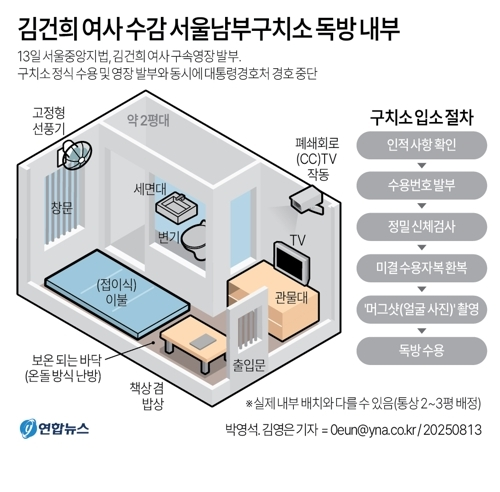
下記によると延期されていた金健希に対する取り調べは今日実施されるとのことです。
종합특검, 오늘 '관저 이전 특혜 의혹' 김건희 소환
https://m.ytn.co.kr/news_view.php?key=202607220159432580
26. 7. 21
金健希についての噂が伝言ゲームのようにして広まっていく過程である誤解が生じた可能性もあるかと思いますが、金健希というのは他殺型の人間であり以前金健希に対して1審より重い判決を下した判事が不審死を遂げたこともありました。死因についてははっきり分からないものの、「金ゴニ(健希)は判事を自殺に追い込む金ゴミである」とでも覚えておいて下さい。
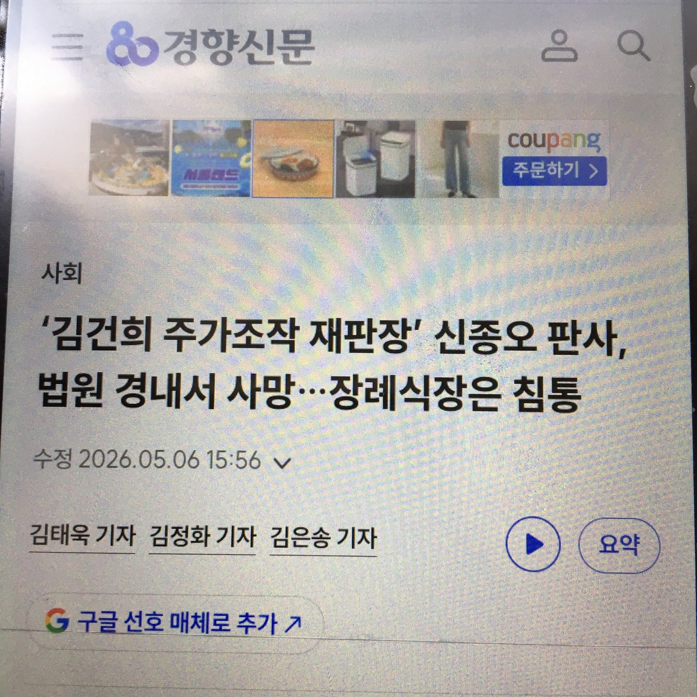
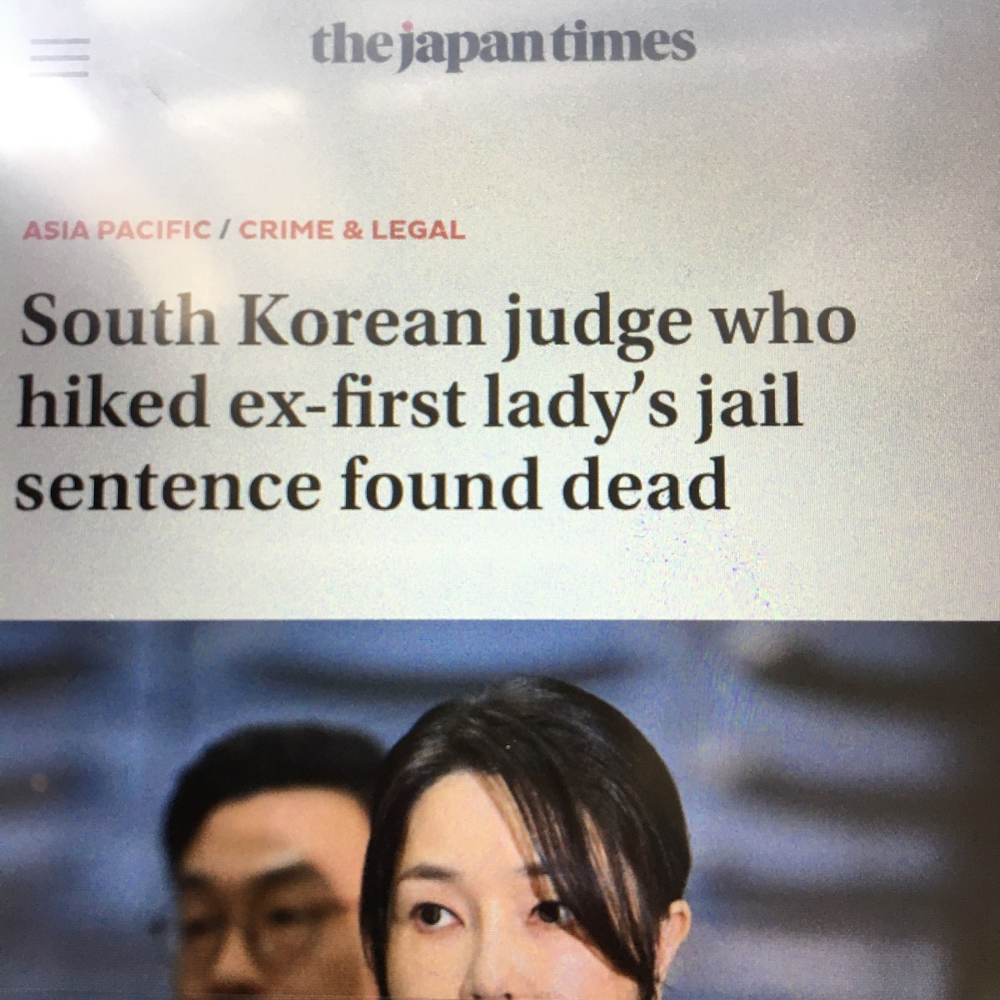
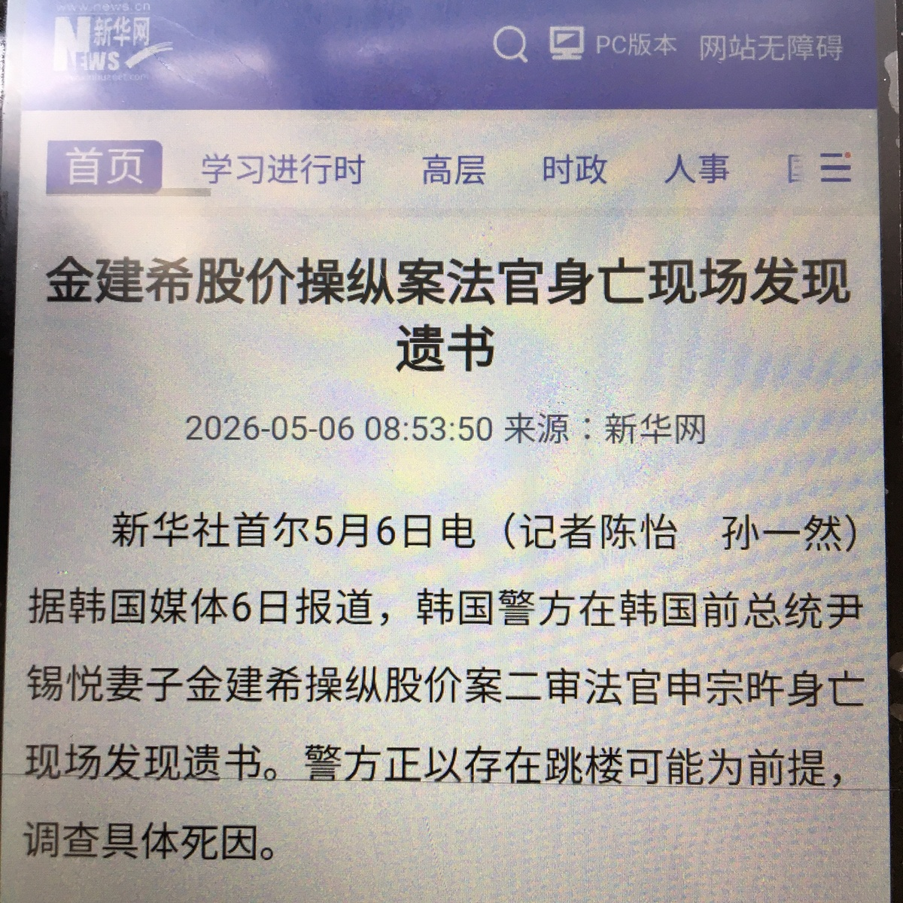
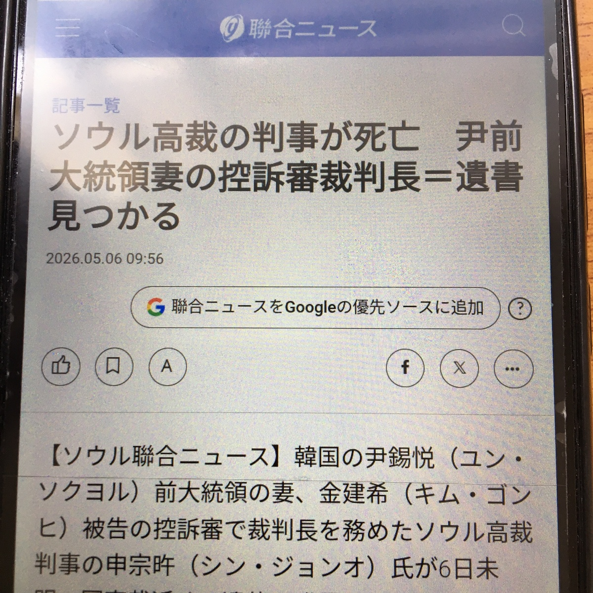
‘김건희 주가조작 재판장’ 신종오 판사, 법원 경내서 사망…장례식장은 침통
https://www.khan.co.kr/article/202605061534001
South Korean judge who hiked ex-first lady’s jail sentence found dead
https://www.japantimes.co.jp/news/2026/05/06/asia-pacific/crime-legal/south-korea-judge-dead/
金建希股价操纵案法官身亡现场发现遗书
https://www.news.cn/world/20260506/2c6cb556a405425b8abb752cf977636e/c.html
ソウル高裁の判事が死亡 尹前大統領妻の控訴審裁判長＝遺書見つかる
https://m-jp.yna.co.kr/view/AJP20260506000900882
日本にはまだ「金健希に対する大法院(最高裁)の判決が今月24日に下される」ということをご存知でない方もおられるかも知れません。ホームページを再開したのでより多くの方々がこれをご覧になると信じ、下記を再掲します。
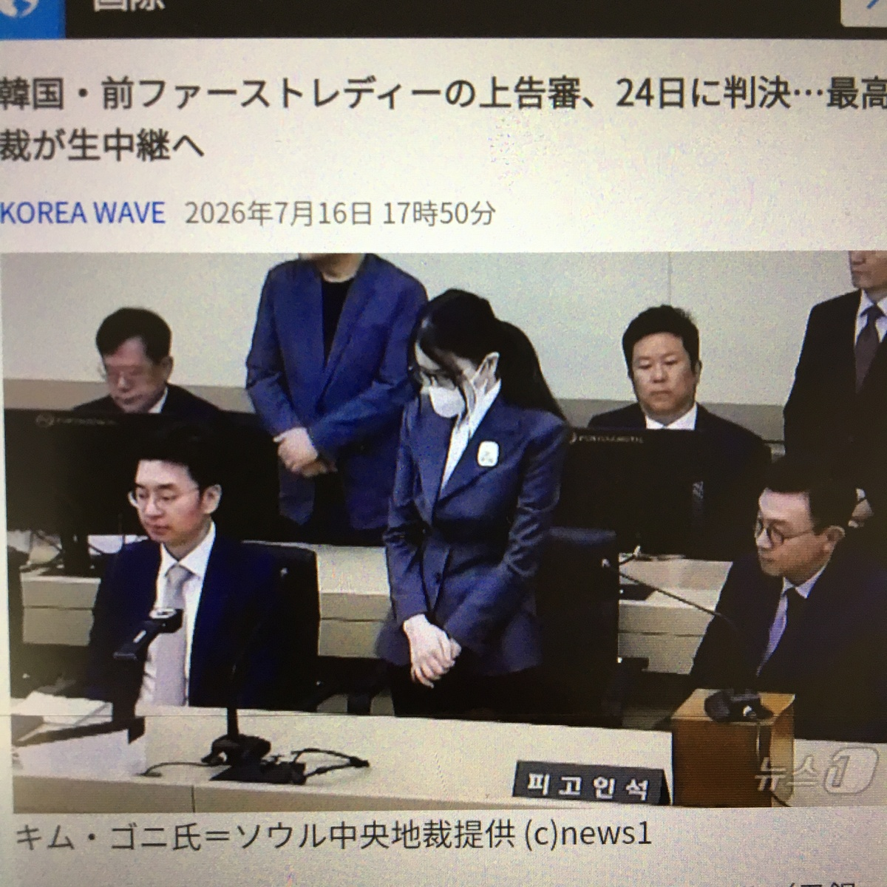
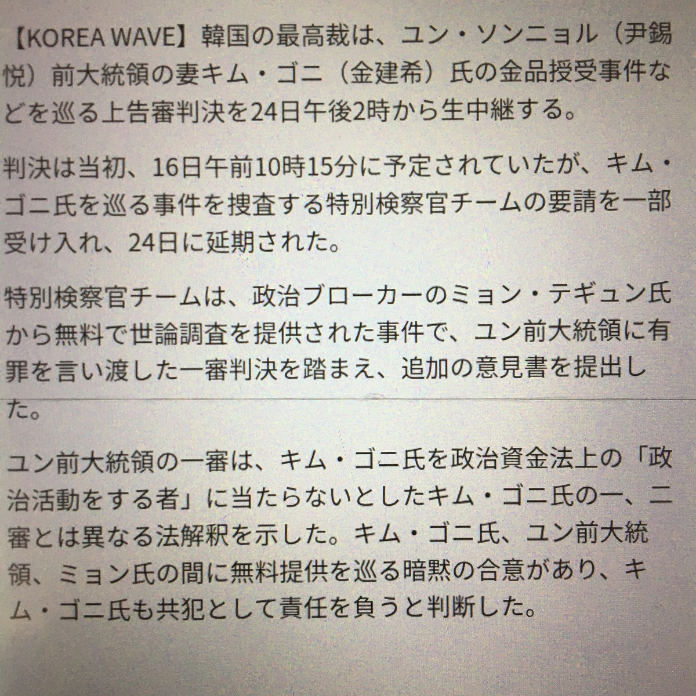
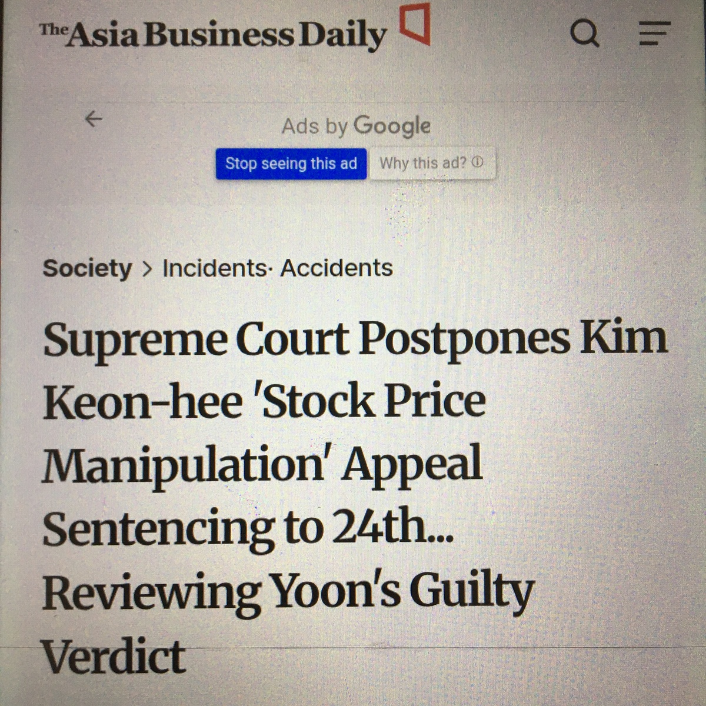
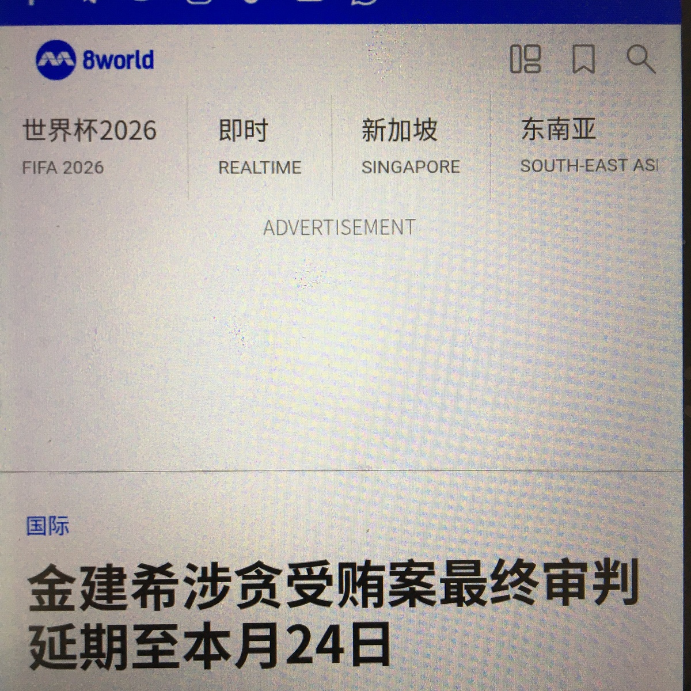
韓国・前ファーストレディーの上告審、24日に判決…最高裁が生中継へ
https://www.afpbb.com/articles/3644395
https://news.infoseek.co.jp/article/koreawave_3644395/
Supreme Court Postpones Kim Keon-hee 'Stock Price Manipulation' Appeal Sentencing to 24th... Reviewing Yoon's Guilty Verdict
https://www.asiae.co.kr/en/article/2026071511443182502
金建希涉贪受贿案最终审判 延期至本月24日
https://www.8world.com/world/kim-keon-hee-3218266
下記記事によると当初19日に予定されていて「健康上の理由」により21日に延期された金健希に対する取調べはまた「健康上の理由」により今度は22日に延期されたそうです。
종합특검, 김건희 첫 소환 22일로 또 연기…"金 건강상 사유"
https://mobile.newsis.com/view/NISX20260720_0003715504
26. 7. 20
以前「金健希の宣告公判の前日に3日使用可能なSIMを買う」と書きましたが、これが原因で何らかの噂が流れた可能性もあるので今日もう一度見に行って5日か7日のがあったら先に買ってしまおうかと思います。あと大法院(最高裁)が審理する3審(上告審)には結審公判がそもそも存在しない可能性もあります。以前尹前大統領の特殊公務執行妨害等の事件について大法院が懲役7年を宣告しましたが、それに先だって結審公判が開かれたでしょうか。もし開かれていた場合、この懲役7年宣告についての記事には「検察は懲役X年を大法院に求刑していた」といった一文があったはずです。私も後でWifiスポットで調べてみます。
(Wifi spot에서) 우선 이걸 읽어 봅니다 (下記の記事にもあるように上告審(3審)というのは1-2審とは異なる性格のものであるようです。2審の判決に不服がある場合に上告が可能となるのですが、上告審にて「上告棄却」された場合2審の判決がそのまま確定されるとあります):
상고심의 의의와 절차: 최후 심판의 이해
https://m.blog.naver.com/PostView.naver?blogId=lawjk3877&logNo=223793075128
尹前大統領についての報道に「재판소원」という用語が出てくるのでこれについても調べてみます。
2026. 3. 11.부터 대법원의 판결에 대해서도 불복을 청구할 수 있는 새로운 제도인 “재판소원” 제도가 시행되고 있습니다. (중략) 재판소원은 쉽게 말해 재판이 헌법상 정당했는지, 헌법을 침해한 것은 아닌지를 규명하는 절차라고 보시면 됩니다. (중략) 재판소원을 고려하고 계신 분들이 염두에 두셔야 할 점은 위 요건들이 매우 까다로운 요건들이라는 것으로서, 단순히 법원이 사실관계를 잘못 판단했다거나 법리해석 내지 적용을 잘못했다는 등의 사유들 정도로는 확정판결을 뒤집기 어렵다는 것입니다. (중략) 어떠한 사유들이 있으면 재판소원이 가능한지 감이 잘 안오실 것 같은데, 예를 들어 형사사건에 있어서는 아래와 같은 상황이 발생하면 재판소원을 검토해볼 수 있을 것입니다.
▯피고인이 신청하는 중요 증인신청을 기각하거나 진술기회를 충분히 주지 않는 등 피고인의 방어권을 침해한 경우 ▯재판과정에서 변호인조력권, 반대신문권 등을 침해한 경우 ▯위법수집증거배제의 원칙에 반하여 확보된 증거가 유죄판결의 근거가 된 경우 ▯위헌적인 법률을 적용하여 판결한 경우 ▯반대증거가 존재함에도 피해자 진술의 신빙성을 과도하게 인정하는 등 사실상 “무죄추정”이 아닌 “유죄추정”에 입각하여 재판이 진행된 경우
재판소원 핵심정리! 쉽게 설명해드립니다!
https://m.blog.naver.com/bestkid7/224214573373
尹前大統領は最近大法院が判決を下した事件について재판소원をしなかったという事ですが、よく分かりませんがそもそも尹前大統領の事件は재판소원の対象とはなりようがなかったのではないか、という気もします。この方が奇妙な言動をなさることはこれまでもよくあった事です。
[단독] 尹, ‘징역 7년’ 체포방해 사건 재판소원 안 하기로
https://www.chosun.com/national/court_law/2026/07/19/OPVBGBA42NH4RNSKETNJC4MYEQ/
話を上告審(3審)に戻しますが、ここに「４月に懲役７年を言い渡した二審判決が確定した」とあるように上告審というのはあくまでも2審のやり直しですから、上告審でまた新たに求刑がなされるのではないようです。この尹前大統領の例では「被告側・特別検察官側双方の上告を棄却」したので尹前大統領側の訴え(無罪)でも、検察側の訴え(2審での求刑量)でもなく2審でソウル高等法院が下した判決がそのまま確定しました。
韓国最高裁は９日、「非常戒厳」宣言を巡る捜査を妨害したとして、特殊公務執行妨害などの罪に問われた前大統領の尹錫悦被告（６５）について、被告側・特別検察官側双方の上告を棄却した。４月に懲役７年を言い渡した二審判決が確定した。尹被告は複数の裁判を抱えるが、最高裁が判断を下すのは初めて。一審は懲役５年としたが、二審は一審で無罪だった罪の一部も有罪と認め、懲役７年の判決を下した。最高裁は二審判決に「法理の誤解などの誤りはない」と指摘した。
韓国・尹錫悦前大統領、懲役７年が確定 戒厳巡る捜査妨害―最高裁
https://www.jiji.com/sp/article?k=2026070900896&g=int
では金健希の2審がどうだったかというと、検察側の求刑は「一審と同様懲役１５年」でしたが、高等法院が下した判決は懲役4年でした。これについても金健希側、検察側がそれぞれ上告しましたが、上告審で大法院が金健希側・検察側双方の上告を棄却した場合は懲役4年が、検察側の上告を受け入れた場合は懲役15年か分かりませんがより重い刑が、(ありえませんが)金健希側の上告を受け入れた場合は無罪が、それぞれ確定するでしょう。金健希の場合も大法院が頭がおかしくなって無罪判決を下さない限り재판소원は起こらないと思います。
(2026. 4. 28) 前大統領夫人に懲役４年 一審無罪の株価操作も認定―韓国高裁
https://www.jiji.com/sp/article?k=2026042800972&g=int
下記記事に「特別検察官は懲役７年６月を求刑していた」とありますが、これは金健希の別の事件です。(最近1審判決が下された매관매직事件)
(2026. 6. 26) 韓国地裁、金建希被告に懲役７年の実刑判決 前大統領妻、人事巡りあっせん収財
https://www.jiji.com/sp/article?k=2026062601031&g=int
上告審は法律審(법률심)とも呼ばれており大法院が事実関係を再度調べることはないとのことですが、上告審に結審公判がないことは下記のページに書かれている公判期日一覧からも確かめることが出来ると思います。
https://namu.wiki/w/김건희-명태균-건진법사%20게이트/재판/김건희
대법원이 심리하는 3심인 상고심엔 결심공판(구형)이 없을 수도 있는데요. 매관매직 사건에 대해선 결심공판이 있었지만 이건 그때 아직 1심 단계였습니다.
26. 7. 19
(Wifi spot에서) これの24日(24일)の部分を見てみて下さい。「김건희 여사 선고 등」は「金健希 女史 宣告 等」です。
대법원 2부 선고(오후 2시, 제1호 법정)
※‘자본시장과금융투자업에관한법률위반 등 혐의’ 김건희 여사 선고 등
(이번주 법조 일정) 7월 20일~7월 24일
https://www.lawtimes.co.kr/news/articleView.html?idxno=223681
下記記事の見出しにもあるように金健希の今回判決が下る事件は「3大疑惑」(3대 의혹)から成るものです。昨日述べたようにこれは(1)統一教会側から金品を受け取った疑惑(통일교 금품수수)、(2)ドイツモータース株価操作疑惑(도이치모터수 주가조작)、(3)世論調査結果を受け取った疑惑(명태균 여론조사 수수)です。
(下記の通り宣告公判が始まるのは24日午後2時です)
19일 법조계에 따르면 대법원 2부(재판장 권영준·주심 박영재 대법관)는 24일 오후 2시 김 여사의 자본시장법 위반 등 혐의 사건을 선고한다. 이른바 '3대 의혹'으로 불리는 사건으로, 민중기 특별검사팀이 작년 9월 김 여사를 기소한 후 약 11개월 만에 내려지는 상고심 선고다. 선고 공판은 대법원이 자체 장비로 촬영한 뒤 방송사에 실시간 송출하는 방식으로 생중계된다.
(下記は今回の事件に含まれる3つの容疑についての説明です)
김 여사는 2022년 4∼7월 건진법사 전성배씨를 통해 윤영호 전 통일교 세계본부장으로부터 교단 지원 청탁을 받고 6천200만원 상당의 그라프 다이아몬드 목걸이, 총 2천만원 상당의 샤넬 가방 두 개를 수수한 혐의(특가법상 알선수재)를 받는다. 2010년 10월∼2012년 12월 도이치모터스 주가조작에 가담해 8억1천만원 상당 부당이득을 챙긴 혐의(자본시장법 위반), 2021년 6월∼2022년 3월 윤석열 전 대통령과 공모해 명태균씨로부터 2억7천만원 상당의 여론조사 결과를 받은 혐의(정치자금법 위반)도 있다.
(下記は昨日私が説明した通りの内容となっています。つまり1審は有罪・無罪・無罪、2審は有罪・有罪・無罪でどちらも3つ目の容疑である世論調査については無罪としています)
1심은 통일교 금품수수 혐의만 일부 유죄로 인정해 징역 1년 8개월을 선고했다. 2심은 이를 전부 유죄로 뒤집고 도이치모터스 주가조작 가담 혐의도 일부 유죄로 봐 형량을 징역 4년과 벌금 5천만원으로 늘렸다. 다만 명태균 여론조사 수수 혐의는 1심과 같이 무죄로 판단했다.
(下記はこの世論調査事件について尹前大統領の判例が出たので金健希の事件を担当する検察が裁判所にこれを含めて再検討せよと延期を申請し、結果延期がなされたというものでこれも昨日述べた通りです)
대법원 선고는 당초 지난 16일로 잡혔다가 특검팀의 연기 신청이 받아들여져 24일로 미뤄졌다. 특검팀은 김 여사의 여론조사 수수 혐의 공범인 윤 전 대통령에게 유죄를 선고한 서울중앙지법 형사합의33부(이진관 부장판사) 판결문을 검토해달라며 대법원에 김 여사 선고 연기를 신청했다.
내주 김건희 '3대 의혹' 상고심…최태원 '세기의 재산분할' 선고도
https://www.yna.co.kr/view/AKR20260718040900004
今日予定されていた金健希に対する(他の容疑に関する)取り調べは21日に延期されています。
관저 이전 관련 금품 수수 및 외압 행사 등 의혹을 받는 김건희 여사의 권창영 2차 종합특별검사팀 출석 일정이 애초 오는 19일에서 21일로 연기됐다.
(7. 16) '관저 이전' 김건희 특검 출석 19→21일 연기…"건강상 이유"
https://www.yna.co.kr/view/AKR20260716157600004
(7. 18)
金健希の今回判決が出る事件というのは複数の容疑の複合体のようなものであり、判決が延期される原因となった容疑というのはその一部です。もしかするとこの一部の容疑だけ取り上げて金健希は無罪になるといった噂を流しておられる方がおられるかも知れません。容疑が3つあるとするとこの方が仰っているのは判決が「有罪•有罪•無罪」、「無罪•有罪•無罪」、「有罪•無罪•無罪」、「無罪•無罪•無罪」のいずれかになるだろうということですが、この内金健希が無罪となるのは「無罪•無罪•無罪」のケースのみであり、私はこれはありえないと思っています。
これについて明日調べてみるつもりですが、金健希の今回の事件の容疑というのは(1)統一教会側から賄賂をもらって便宜を図った容疑、(2)ドイツモータースの株価操作の容疑、(3)世論調査についての容疑、の3つであり、一審判決はこのうち(1)のみを有罪とするつまり「有罪•無罪•無罪」の判決だったと思います。それが二審で「有罪•有罪•無罪」となったので刑がより重くなりました。今回(3)世論調査についての容疑について尹前大統領の判例が出たので検察がそれを審理させようと延期申請を出したのだと思いますが、結局「有罪•有罪•無罪」になる可能性もあります。この延期期間中に金健希について同情を強いるような記事が出る可能性もあるかと思いますが、金健希がゴミだというのは私にとっては固定の考え方なので誰かがいくら頑張ってもこれを変えようはありません。
26. 7. 18
(Wifi spot에서) 今回金健希の宣告公判についてのフェイク映像が流れたのだとすると、それは恐らく下記の映像のうち1つか複数を使用して作られたものだと思われます。今日はWifiが使える所に行ってこの件について詳しく調べてみるつもりですが、日本の皆様が事実をお知りになればひどくがっかりされるだろうと思います。今回もしフェイク映像が流れたのだとすると、そのためかも知れませんね。
(2025/9/24) 株価操作等事件 初公判
https://youtube.com/shorts/1XF8TtYoU64
https://youtube.com/shorts/1Ij0qBSjATE
(2025/11/19) 株価操作等事件 第10回 公判
https://www.youtube.com/live/frWFHrD6Xpc
(2025/12/3) 株価操作等事件 1審 結審公判
(2026/1/28) 株価操作等事件 1審 宣告公判
(2026/4/13) 金健希が被告人として出席した公判
https://youtube.com/shorts/hFzLnjtKMao
(2026/4/30) 株価操作等事件 2審 宣告公判 (33分あたりでズームアップされます)
(2026/6/26) 賣官賣職事件 1審 宣告公判
https://youtube.com/shorts/GYMaM3t99Eg
下記は今回の延期についてのニュース映像ですが、2025/9/24の映像が再利用されています。
(7. 17)
金健希の宣告公判(の延期)について信じられないという方は今朝の朝刊をご覧になってみて下さい。昨日大法院(最高裁)で判決が下された場合には今朝どの新聞社もそれを報じたはずです。またSNS等にフェイク映像が流れた可能性もありますが、恐らく過去の公判の映像を再利用しているでしょうから、出所を調べてみれば解決するかと思います。
26. 6. 27
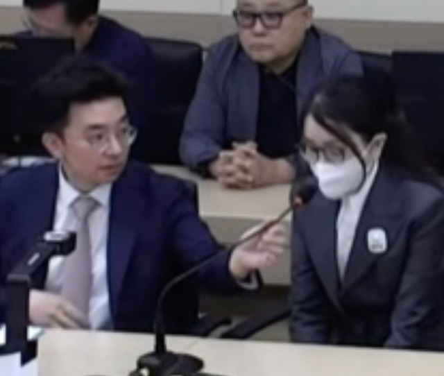
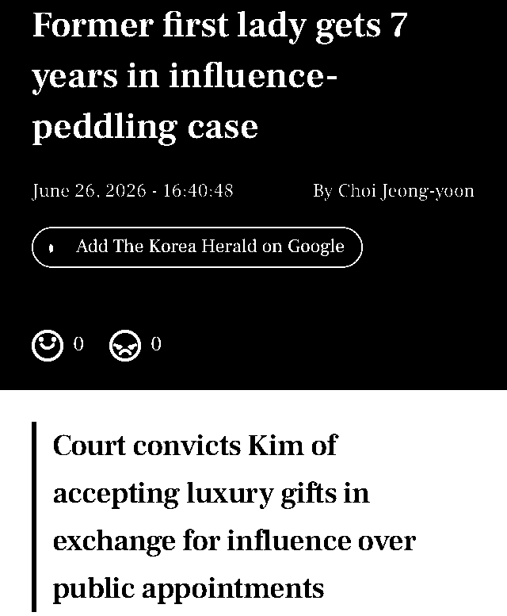
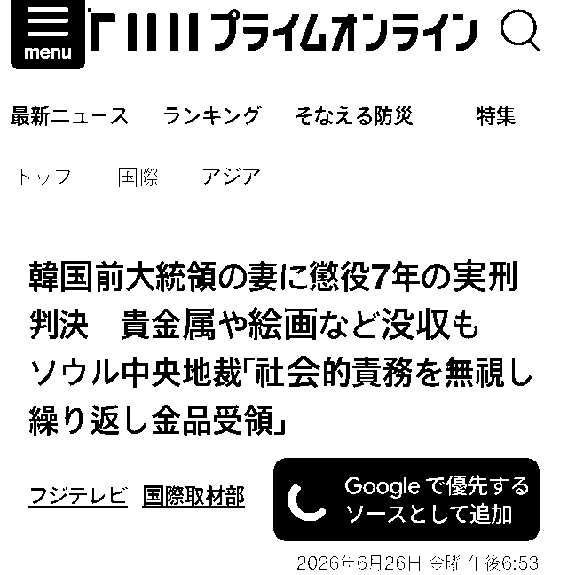
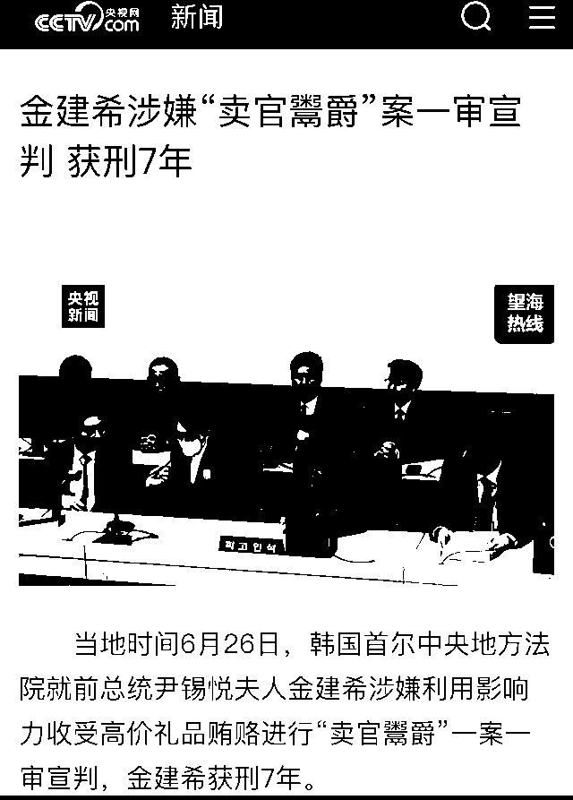
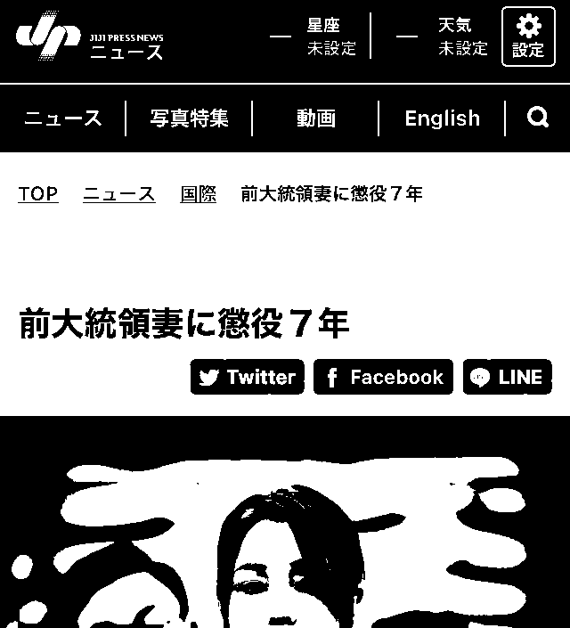
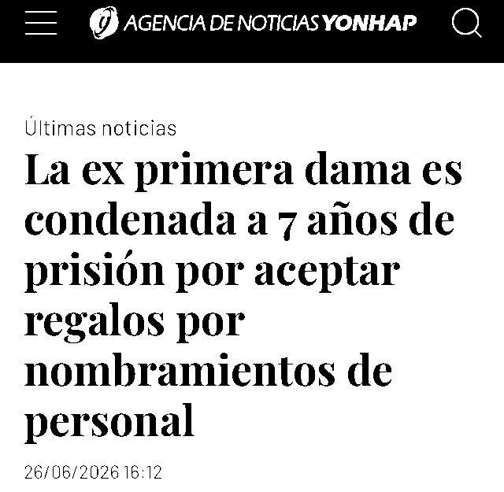
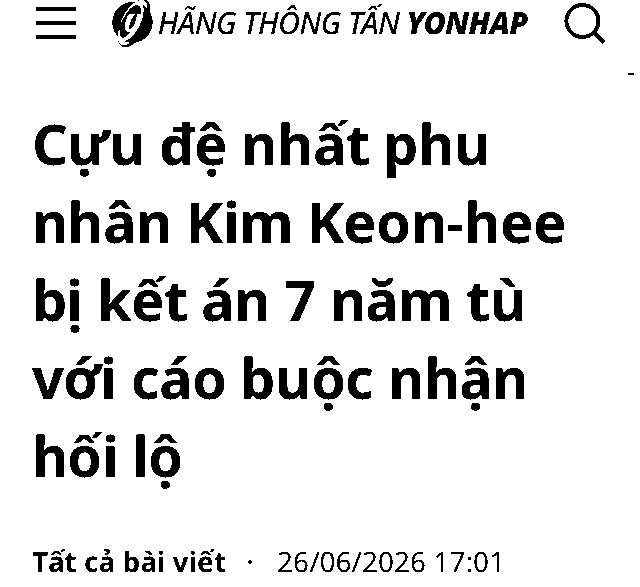
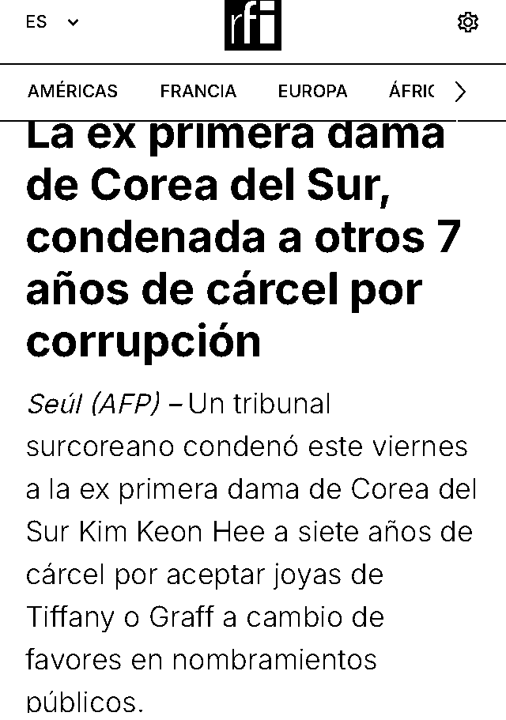
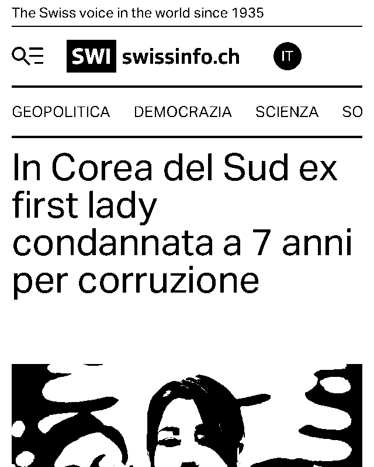
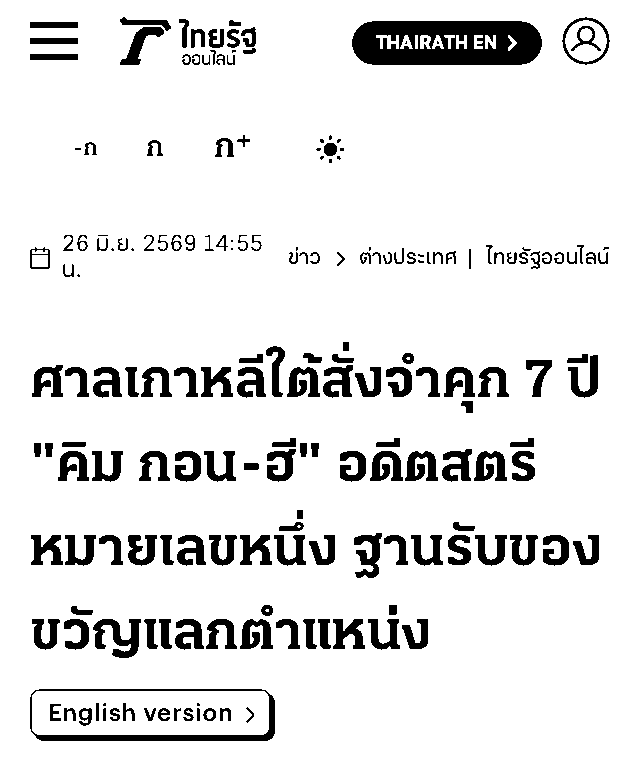
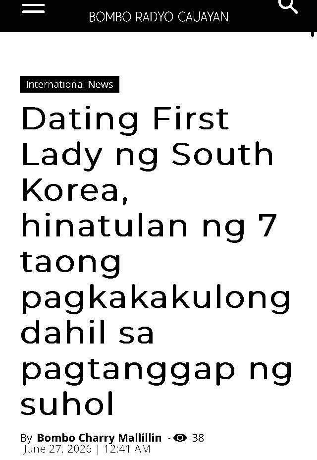
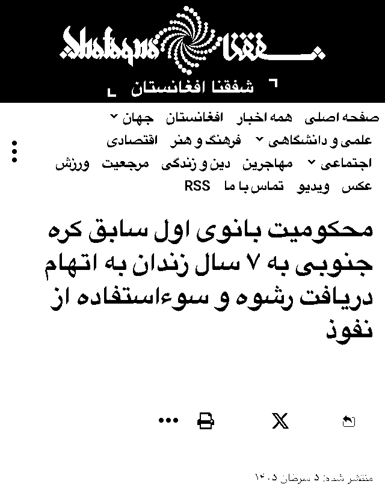
(Wifi spot에서) 우선 어제 열린 김건희의 매관매직 사건 선고공판 영상을 소개하겠습니다. (昨日開かれた金健希の宣告公判の映像です)
그리고 여러 언어로 쓰인 기사를 소개해 볼래.
Former first lady gets 7 years in influence-peddling case
https://m.koreaherald.com/article/10789757
韓国前大統領の妻に懲役7年の実刑判決 貴金属や絵画など没収も ソウル中央地裁「社会的責務を無視し繰り返し金品受領」
https://www.fnn.jp/articles/-/1066439
金建希涉嫌“卖官鬻爵”案一审宣判 获刑7年
https://news.cctv.com/2026/06/26/ARTIqIrTy8Z6Ygw2ePCuMT7z260626.shtml
前大統領妻に懲役７年
https://sp.m.jiji.com/article/show/3809249
La ex primera dama es condenada a 7 años de prisión por aceptar regalos por nombramientos de personal
https://m-sp.yna.co.kr/view/ASP20260626001900883
Cựu đệ nhất phu nhân Kim Keon-hee bị kết án 7 năm tù với cáo buộc nhận hối lộ
https://vi.yna.co.kr/view/AVI20260626001000880
La ex primera dama de Corea del Sur, condenada a otros 7 años de cárcel por corrupción
In Corea del Sud ex first lady condannata a 7 anni per corruzione